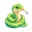
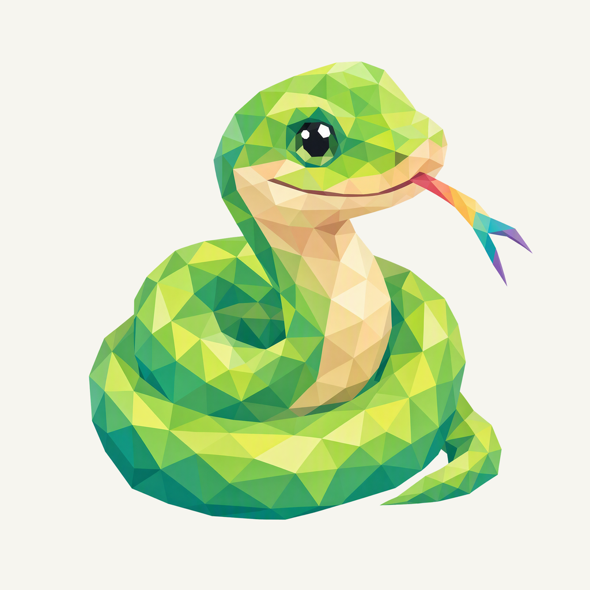
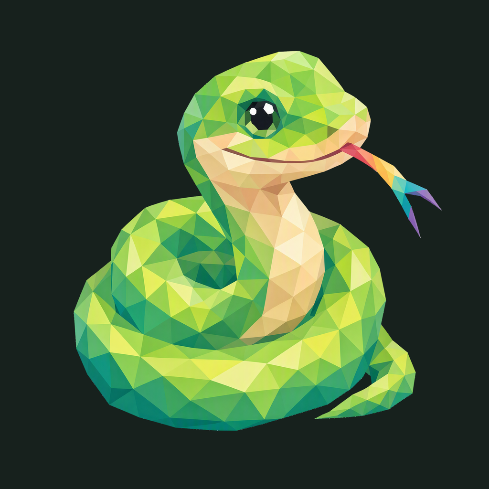

01 / Composition
The coil becomes the frame
The liked green face returns above a natural compact coil. The old circular ring is gone; the tapering tail and tongue remain complete.
Animal family · Refined identity
The green snake settles into a natural coil, with one small flick of color.
Adopted redesign · finishing 01
Native 2048 × 2048

01 / Composition
The liked green face returns above a natural compact coil. The old circular ring is gone; the tapering tail and tongue remain complete.
02 / Drawing
Connected chartreuse, leaf-green and teal facets describe the body. A cream belly clarifies the coil, while one rainbow tongue adds a single outward gesture.
03 / Presentation
Open S-shaped relief bends travel around a moss-green field. Broad, uneven paths support the coil without enclosing it in another ring.
Presentation tiles at 128/64 px; transparent artwork for small app and browser marks.

The complete animal and accessory have at least 198.5 px clearance from the actual rounded outline. Ten export sizes preserve one uniform placement. Small app/browser marks use the transparent foreground; fine facets and accessory details simplify at 16 px.
A designed background, with colors sampled from the exact native artwork.
Select a swatch to copy its hex value. Artwork colors and platform system colors are documented separately.
One transparent foreground, checked on two contrasting backgrounds.


Azure Foundry · gpt-image-2 · one request · native 2048 × 2048
Loading study text…
The previous identity is historical context; the current brief defines the selected animal, gesture and palette. Frogie guides connected flat facets; these owner-provided boards guide the independent background, offset framing, and matte surface.


{kind=link}
{kind=link}
{kind=link}
{kind=link}
{kind=link}